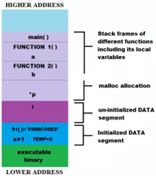

•In computer programming, an entry point is where control is transferred from the operating system to a computer program, at which place the processor enters a program or a code fragment and execution begins.
•In some operating systems or programming languages, the initial entry is not part of the program but of the runtime library, in which case the runtime library initializes the program and then the runtime library enters the program.
•In other cases, the program may call the runtime library before doing anything when it is entered for the first time, and, after the runtime library returns, the actual code of the program begins to execute. This marks the transition from load time (and dynamic link time, if present) to run time.
•In many programming languages, this named point is a function called main; as a result, the entry point is often called the main function.

•In computing, a namespace is a set of symbols that are used to organize objects of various kinds, so that these objects may be referred to by name.
•Namespaces are commonly structured as hierarchies to allow reuse of names in different contexts.
•In computer programming,a comment is a programmer-readable explanation or annotation in the source code of a computer program.
•They are added with the purpose of making the source code easier for humans to understand, and are generally ignored by compilers and interpreters. The syntax of comments in various programming languages varies considerably.